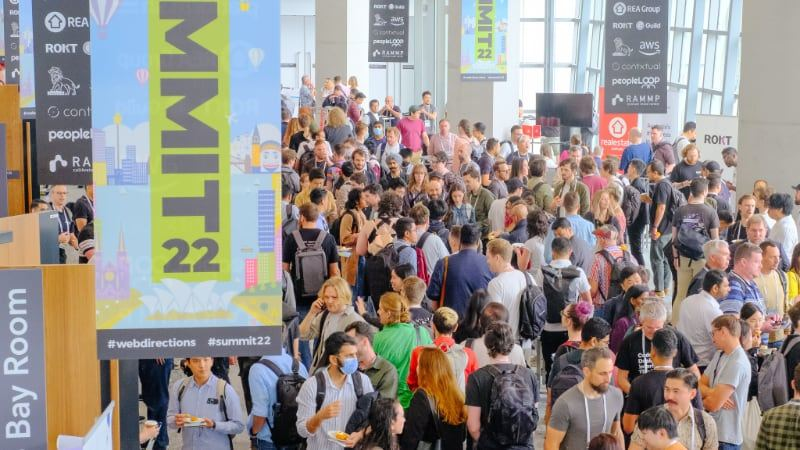

Conferences · AI
AI Engineer Sydney 2026
- Dates
- –
- Venue
- Hilton Sydney
- Location
- Sydney, Australia
- Format
- In-person
- Category
- AI
- Industry
- AI engineering
- Organiser
- Web Directions
- Official website
- https://webdirections.org/ai-engineer-sydney/
About
Part of AI Week Sydney (4-11 Dec 2026); workshop day 9 Dec 2026. Dates are local Australian dates (AEST/AEDT, ACST/ACDT or AWST depending on state).
Topics: AI engineering, LLMs, agents.
No organiser attendance figure found on official pages (23 Nov 2026). Ranked by an estimated size tier 'medium' (our judgement from format, venue and scale, not an official number).
Sources
- Official — https://webdirections.org/ai-engineer-sydney/
Venue
- Hilton Sydney — Hotel conference venue · Sydney, New South Wales, Australia